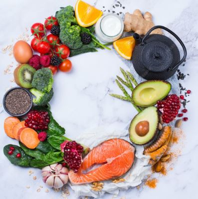
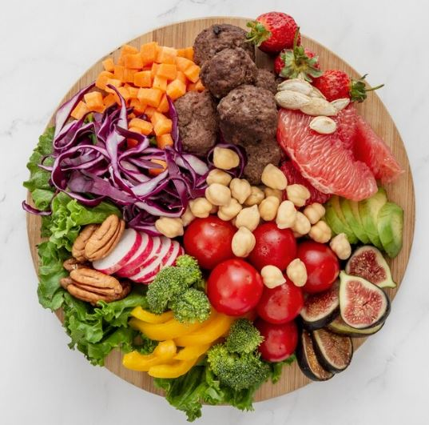

<footer class="footer widget-footer ttm-bgcolor-darkgrey ttm-bg clearfix footer-17" style="background: url('assets/images/footer-17-bg.jpg') center center / cover no-repeat;">
<div class="ttm-row-wrapper-bg-layer ttm-bg-layer"></div>
<div class="container">
<div class="second-footer">
<div class="row">
<div class="widget-area col-xs-12 col-sm-6 col-md-6 col-lg-5">
<div class="widget widget_text clearfix">
<div class="footer-logo">

</div>
<p>
<span class="company_name">nutripro</span> is a Nutritionist and Wellness Consultancy firm
							offering personalized diet
							planning,
							nutritional guidance, lifestyle optimization, and holistic wellness solutions. We help
							individuals
							and families achieve better health with clarity, balance, and sustainable habits, ensuring
							their
							well-being and long-term goals are supported at every step.

						</p>
</div>
</div>
<div class="widget-area col-xs-12 col-sm-6 col-md-6 col-lg-2 footer-17_old">
<div class="widget widget_nav_menu clearfix">
<h3 class="widget-title" id="quick-link-title">Explore</h3>
<ul class="menu-footer-quick-links footer-navigation">
<li><a href="About Us.html">About Us</a></li>
<li><a href="Services.html">Services</a></li>
</ul>
</div>
</div>
<div class="widget-area col-xs-12 col-sm-6 col-md-6 col-lg-2 footer-17_old">
<div class="widget widget_nav_menu clearfix">
<h3 class="widget-title" id="quick-link-title">Explore</h3>
<ul class="menu-footer-quick-links footer-navigation">
<li><a href="Contact.html">Contact</a></li>
<li><a href="Blog.html">Blog</a></li>
</ul>
</div>
</div>
<div class="widget-area col-xs-12 col-sm-6 col-md-6 col-lg-3">
<div class="widget widget-recent-post res-991-margin_top30 clearfix">
<h3 class="widget-title">Latest Insights</h3>
<ul class="widget-post ttm-recent-post-list">
<li>

<div class="post-detail">
<span class="post-date"><i class="bi bi-calendar"></i>15 July, 2023</span>
<a href="#">Top 7 Foods to Boost Your Daily Energy Naturally</a>
</div>
</li>
<li>

<div class="post-detail">
<span class="post-date"><i class="bi bi-calendar"></i>10 July, 2023</span>
<a href="#">A Beginner’s Guide to Balanced Plate Nutrition</a>
</div>
</li>
</ul>
</div>
</div>
</div>
</div>
<div class="bottom-footer-text">
<div class="row copyright text-center">
<div class="col-lg-12 col-md-12 col-sm-12 d-md-flex d-sm-block justify-content-center">
<span>Copyright © <span id="currentYear"></span>
<a href="index.html"><span class="company_name">nutripro</span> &amp; Co.</a> All Rights
						Reserved.
					</span>
</div>
</div>
</div>
</div>
</footer>
<script>
    $(document).ready(function () {
        $("#currentYear").text(new Date().getFullYear());
    });
</script>